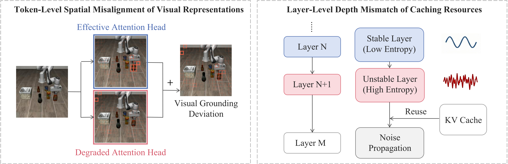

TVCache
Text–Vision Synergistic Token Caching: A Training-Free Framework for Efficient Vision-Language-Action Inference
Overview
Vision-language-action models repeatedly process dense visual tokens, making inference expensive during robot execution. Token caching reduces this cost by reusing temporally redundant representations, but existing approaches underuse the interaction between language and vision when deciding what and where to cache.
TVCache is a training-free framework that makes cache reuse task-aware at two complementary resolutions. It filters unreliable attention heads to obtain cleaner language-conditioned token relevance, and selects reuse layers according to cross-modal stability. The method plugs into pretrained VLAs without retraining or architectural modification.

Methodology
TVCache refines both spatial token selection and depth-wise reuse while preserving the training-free nature of token caching. It first scores attention heads by their text-conditioned response intensity and spatial concentration, filtering diffuse or weak heads to obtain a cleaner relevance map that protects task-critical visual tokens. It then uses text–vision entropy differences to identify stable network depths and separates the selected reuse layers, avoiding both premature reuse and redundant recomputation.

Full-Rollout Method Comparison
Each clip shows a complete successful task trajectory across Base, VLA-Cache, and Ours. Only rollouts explicitly recorded as successful by the evaluator are used.
The three panels share the same successful source trajectory and are time-rescaled to 1.00×, 1.43×, and 1.44×. They visualize relative playback rates and are not independent method outcomes or raw wall-clock recordings.
LIBERO Simulation
Blue patches are reused; yellow patches are recomputed. Each task is shown at all three retention settings.
LIBERO-Object Place the alphabet soup in the basket.
LIBERO-Goal Open the middle drawer of the cabinet.
LIBERO-Long Place the alphabet soup and tomato sauce in the basket.
Real-World Manipulation
Real-world comparisons use the 50%, 25%, and 12.5% settings.
Hang Cup Hang the cup on the wooden mug tree.
Pack Pear Pick up the pear and place it inside the basket.
Pot Duck Put the duck into the pot and cover it with the lid.
Set Kettle Pick up the kettle and place it on the plate.
Results
Simulation Results
Average success rate on LIBERO at matched token-retention ratios. TVCache consistently improves over VLA-Cache, with the largest gain appearing under the tightest OpenVLA-OFT budget.
On OpenVLA-OFT, TVCache improves average success by 14.50 percentage points over VLA-Cache at 12.5% token retention while reducing FLOPs by 2.44× relative to full-token inference.
| VLA model | Tokens retained | VLA-Cache | TVCache | Gain |
|---|---|---|---|---|
| OpenVLA-OFT | 50% | 96.80% | 97.55% | +0.75 pp |
| OpenVLA-OFT | 25% | 87.85% | 95.55% | +7.70 pp |
| OpenVLA-OFT | 12.5% | 69.50% | 84.00% | +14.50 pp |
| BitVLA | 50% | 93.90% | 95.00% | +1.10 pp |
| BitVLA | 25% | 93.15% | 94.90% | +1.75 pp |
| BitVLA | 12.5% | 92.50% | 94.05% | +1.55 pp |
| VLA-Adapter | 50% | 77.35% | 79.95% | +2.60 pp |
| VLA-Adapter | 25% | 48.35% | 54.40% | +6.05 pp |
| π0.5 | 50% | 97.20% | 98.45% | +1.25 pp |
| π0.5 | 25% | 89.20% | 94.75% | +5.55 pp |
Real-World Results
We further evaluate TVCache on four physical manipulation tasks with a Franka Research 3 robot. The comparison below reports success rates at matched token-retention ratios.